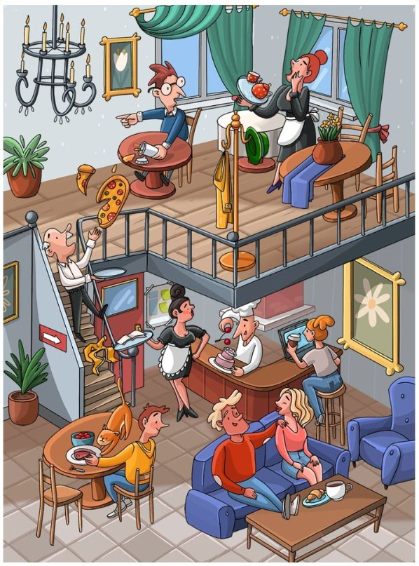
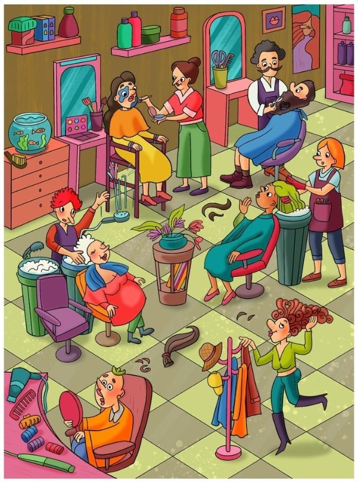
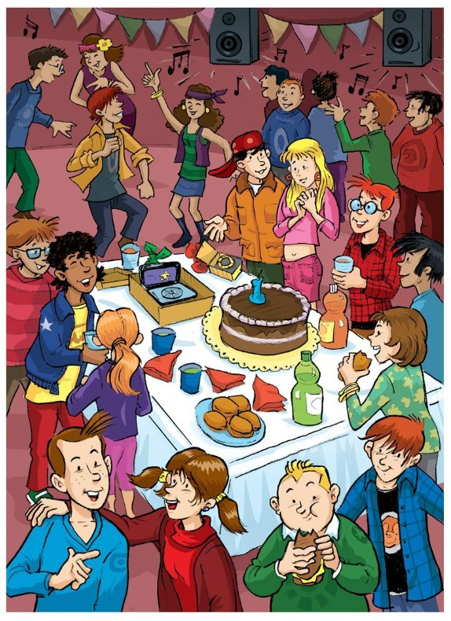

Camping Trip
What is happening in this campsite picture? Who looks calm, and who looks surprised?
- A man is resting in a blue hammock between two trees.
- A woman in a pink dress looks worried and has her hands on her hips.
- A cook is holding a long skewer with food that is on fire.
- There is a round grill full of vegetables and meat above a campfire.
- Two children are running with food on sticks near the hot grill.
- A yellow dog is running happily beside one of the children.
- A big brown bear is peeking from behind a tree and watching the people.
- A raccoon is opening the picnic basket and taking food.
- A tent, a guitar and camping things are set up beside the family.
- Another raccoon is hiding in the bushes at the bottom of the picture.

Busy Café
What can you see in this noisy café? Who is eating, who is working and what looks a bit silly?
- The café has two levels with a staircase in the middle.
- A waiter on the stairs is slipping and almost dropping a big pizza.
- A man upstairs is pointing while his slice of pizza falls off his plate.
- A woman in black is carrying drinks on a tray near the bar.
- A chef behind the counter is serving cake and drinks.
- A couple is sitting on a blue sofa and talking together.
- A woman is sitting at the bar enjoying a drink and looking relaxed.
- Green curtains hang around the windows, and there is a chandelier on the ceiling.
- A cat is sitting on a chair at one of the tables near the bottom.
- Potted plants and a big flower painting decorate the café walls.

Hair Salon
Look at this busy salon. What are the people doing to change how they look?
- A woman is getting her hair washed in a sink and looks very relaxed.
- Another woman is having a face mask and makeup put on.
- A hairdresser is trimming a man’s beard while he lies back in a chair.
- A person with red hair is drying an older woman’s hair with a hairdryer.
- A customer in a green dress is sitting in a salon chair with rollers in her hair.
- A woman is running with a coat and hat, and some hair is falling on the floor.
- Shelves are filled with bottles, brushes and hair products.
- There is a fish tank with colorful fish on one side of the room.
- Combs, scissors and other tools are spread out on the front counter.
- The floor has hair clippings and a long lock of hair near the plant in the center.

Birthday Party
What is happening at this party? How do you think the children are feeling?
- A big chocolate cake with one candle is on the table in the middle.
- Children are dancing to music, and musical notes float around the room.
- Colorful flags and speakers hang above the party area.
- A group of kids is talking and laughing at the front of the picture.
- One child is drinking from a cup while another eats a burger.
- There are bottles of juice and soft drinks on the table.
- Plates with rolls, snacks and napkins are spread out around the cake.
- Some children are wearing bright jackets, hats and patterned shirts.
- A girl with long blond hair looks a little shy while others talk to her.
- Everyone seems busy doing something different: dancing, eating, talking or listening to music.